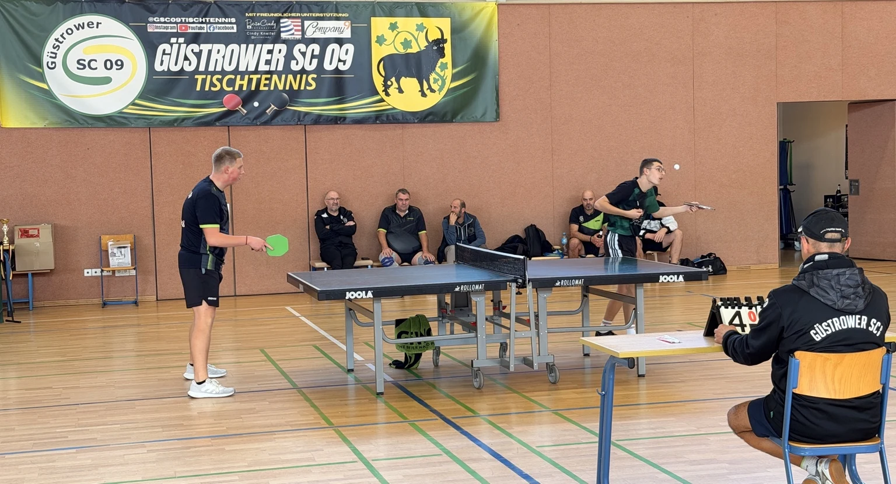
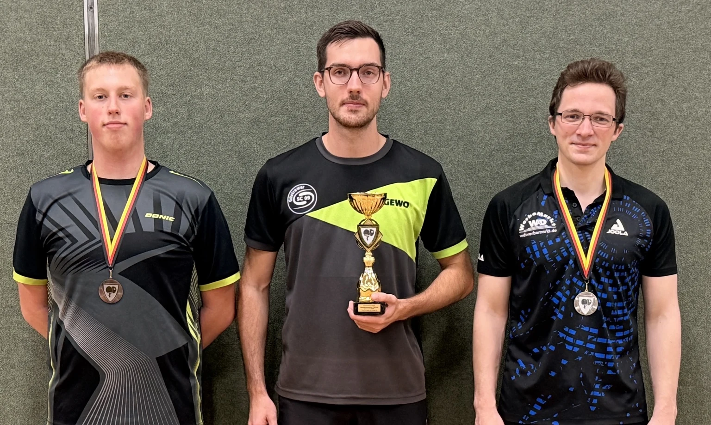
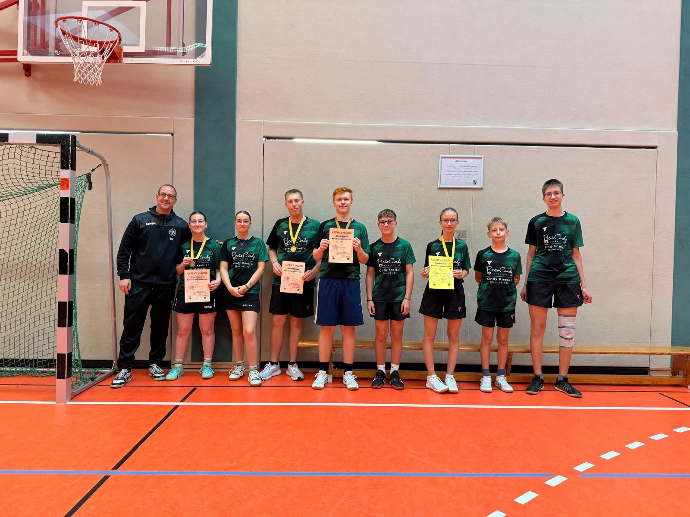
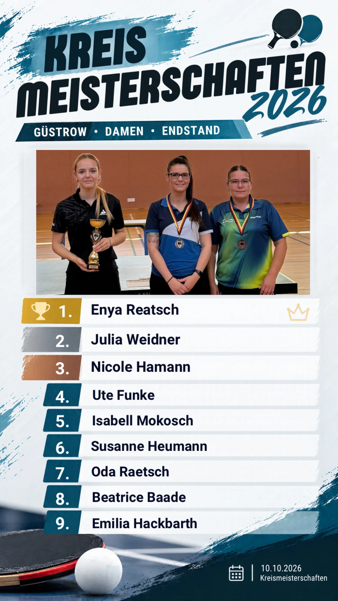
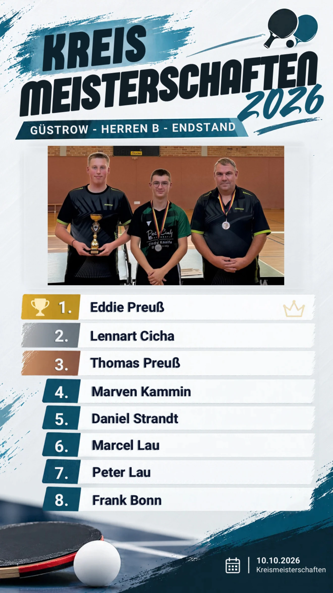
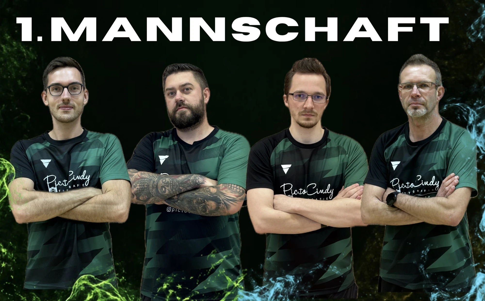
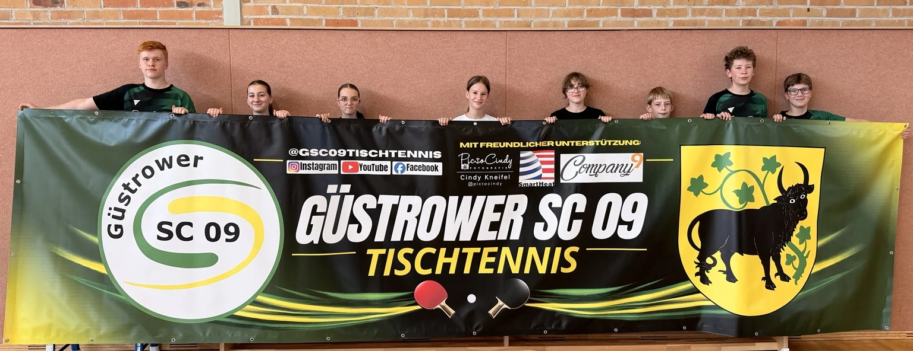

NACHWUCHS · LANDESLIGA JUNGEN 19 WEST
Neu
GÜSTROWER SC 09 · ABTEILUNG TISCHTENNIS
KLEINER BALL.
GROSSES WIR.
Für den ersten Aufschlag. Für den nächsten Punkt.
Für alle, die gemeinsam mehr bewegen wollen.
UNSER SPORT. UNSERE STADT. UNSER VEREIN.18273 GÜSTROW

Gemeinsam im Finale.
Tischtennis verbindet.
In Güstrow zu Hause.
100+Mitglieder
5Erwachsenenteams
1Nachwuchsteam
Immer nah dran@gsc09tischtennis ↗01 / UNSERE ABTEILUNG
VIEL SPORT.
NOCH MEHR
ZUSAMMENHALT.
Vom lockeren Ballwechsel bis zum Punktspiel in der Landesliga: Bei uns findet Tischtennis auf vielen Niveaus statt.
Unsere Abteilung bringt Kinder, Jugendliche und Erwachsene zusammen. Fünf Erwachsenenmannschaften, ein Nachwuchsteam und unsere Freizeitsportler machen den GSC 09 zu einem Treffpunkt für alle, die Freude an diesem Sport haben.
Du willst Tischtennis ausprobieren oder nach einer Pause wieder einsteigen? Melde dich für ein Schnuppertraining. Wir lernen dich gern kennen.
Dein Kontakt zum VereinNEUES AUS DEM VEREIN · STAND 22.11.2026
DAS BEWEGT UNS.
ERWACHSENE · BEZIRKSRANGLISTE B
Wilkenloh wird Dritter bei der Qualifikation zur Bezirksrangliste
Turnierbericht lesen ↓3. MANNSCHAFT · BEZIRKSKLASSE NORDOST 1
Drögmöller ungeschlagen: Die Dritte schlägt Kröpelin III mit 10:7
Spielbericht lesen ↓2. MANNSCHAFT · BEZIRKSKLASSE NORDOST 1
Nach 9:7-Führung: Die Zweite spielt 9:9 in Lalendorf
Spielbericht lesen ↓5. MANNSCHAFT · 3. KREISKLASSE
Schröder gewinnt drei Einzel: Die Fünfte schlägt Gnoien IV mit 10:5
Spielbericht lesen ↓1. MANNSCHAFT · LANDESLIGA WEST
Die Erste gewinnt alle fünf Entscheidungssätze in Schwerin
Spielbericht lesen ↓Spiel- und Turnierberichte.
Unsere Berichte auf Grundlage der offiziellen click-TT-Protokolle.
16.–22. NOVEMBER 2026
ERWACHSENE · BEZIRKSRANGLISTE BWilkenloh wird Dritter bei der Qualifikation zur Bezirksrangliste
Am 21. November 2026 wurde die Qualifikation zur Bezirksrangliste B Nordost im Erwachsenen-Einzel ausgespielt. Acht Spieler bestritten jeweils sieben Spiele. Für den Güstrower SC 09 gingen Johannes Wilkenloh und Eddie Preuß an den Start.
Johannes Wilkenloh beendete das Turnier mit 5:2 Spielen auf dem dritten Platz. Vor ihm lagen nur Moritz Dohse und Luis Eß vom TSV Rostock Süd, die beide auf 6:1 Spiele kamen. Wilkenloh ging mit einem Q-TTR-Wert von 1660 ins Turnier, dem dritthöchsten im Feld.
Eddie Preuß war mit einem Q-TTR-Wert von 1375 der am niedrigsten eingestufte Teilnehmer. Mit zwei Siegen und 2:5 Spielen belegte er Platz sechs und landete damit vor Christian Haack (SV Eintracht Rostock, 1469) und Fynn Lennox Bakeberg (TSV 1860 Stralsund, 1405).
NACHWUCHS · LANDESLIGA JUNGEN 19 WESTVom 2:4 zur Führung: U19 holt 5:5 in Waren
Unsere U19 spielte am 21. November 2026 in der Landesliga Jungen 19 West beim TTC Grün-Weiß Waren 5:5. Die Partie war ursprünglich für den 11. Oktober angesetzt. Enya Raetsch und Til Burmeister gewannen ihr Doppel gegen Tiberius Milinski und Elias Meßner mit 3:0. Leon Schöttler und Emil Socolowsky unterlagen Fridolin Häcker und Lenny Wybranietz mit 0:3.
Nach der ersten Einzelrunde lag die U19 mit 2:4 zurück. Nur Raetsch hatte gegen Wybranietz mit 3:1 gepunktet. Danach gewann der GSC drei Einzel in Folge und ging mit 5:4 in Führung. Raetsch setzte sich gegen Häcker mit 3:2 durch, Burmeister gegen Wybranietz ebenfalls mit 3:2. Schöttler gewann gegen Milinski mit 3:1.
Das letzte Einzel ging an die Gastgeber: Meßner schlug Socolowsky mit 3:0 und stellte das 5:5 her. Enya Raetsch blieb an diesem Tag ungeschlagen und gewann ihr Doppel sowie beide Einzel. Am Vorabend hatte sie bereits für die zweite Herrenmannschaft in Lalendorf gespielt. Das Satzverhältnis lautete 15:21.
Tabelle und Spielplan der Staffel ↗3. MANNSCHAFT · BEZIRKSKLASSE NORDOST 1Drögmöller ungeschlagen: Die Dritte schlägt Kröpelin III mit 10:7
Die dritte Mannschaft gewann am 20. November 2026 ihr Heimspiel in der Bezirksklasse Nordost 1 gegen den TTC Kröpelin III mit 10:7. Den Grundstein legten beide Doppel: Maik Bildhauer und Hans-Jürgen Drögmöller gewannen gegen Christopher Schönfelder und Bernard Bensler mit 3:0, den dritten Satz mit 11:1. Matthias Hackbarth und Marcel Lau setzten sich gegen Marco Heckl und Frank Schilling mit 3:1 durch.
Hans-Jürgen Drögmöller blieb in allen vier Einzeln ungeschlagen. Gegen Heckl entschied er den fünften Satz mit 11:5 für sich. Mit einem 3:0 gegen Schilling holte er den zehnten Punkt.
Marcel Lau gewann seine Einzel gegen Schilling und Bensler jeweils mit 3:0, den ersten Satz gegen Schilling mit 18:16. Stefan Ruß holte gegen Bensler ebenfalls ein 3:0. Maik Bildhauer gewann gegen Schilling mit 3:1. Seine drei übrigen Einzel gegen Heckl, Schönfelder und Bensler verlor er jeweils erst im fünften Satz.
Nach der ersten Einzelrunde führte die Dritte mit 5:1 und gab diese Führung nicht mehr aus der Hand. Das letzte Einzel zwischen Ruß und Heckl wurde nach dem zehnten Punkt nicht mehr gespielt. Das Satzverhältnis lautete 37:26. In der Halle waren 12 Zuschauer.
Tabelle und Spielplan der Staffel ↗2. MANNSCHAFT · BEZIRKSKLASSE NORDOST 1Nach 9:7-Führung: Die Zweite spielt 9:9 in Lalendorf
Die zweite Mannschaft trennte sich am 20. November 2026 in der Bezirksklasse Nordost 1 mit 9:9 von der KSG Lalendorf/Wattmannshagen. Beide Doppel gingen an den GSC. Christian Peters und Marven Kammin gewannen gegen Lukas Klotz und Dominic-Michele Ihns mit 3:0, die ersten beiden Sätze jeweils mit 13:11. Lennart Cicha und Enya Raetsch setzten sich gegen Emil Schröter und Thorben Krase im fünften Satz mit 11:5 durch.
Nach der ersten Einzelrunde führte die Zweite mit 5:1. Danach holten die Gastgeber drei Punkte in Folge und verkürzten auf 5:4. Bei der 2:3-Niederlage von Cicha gegen Ihns ging der dritte Satz mit 17:15 an Cicha.
Enya Raetsch und Lennart Cicha gewannen jeweils zwei Einzel. Raetsch siegte gegen Ihns mit 3:0 und gegen Krase mit 3:1, Cicha gegen Krase und Schröter jeweils mit 3:1. Marven Kammin schlug Schröter mit 3:1. Gegen Krase lag er mit 0:2 Sätzen zurück und gewann den fünften Satz mit 11:8. Christian Peters brachte die Zweite mit einem 3:0 gegen Krase mit 9:7 in Führung.
Die letzten beiden Einzel gingen an die Gastgeber. Lukas Klotz, der alle vier Einzel gewann, schlug Cicha mit 3:0. Ihns setzte sich gegen Kammin im fünften Satz mit 11:7 durch. Das Satzverhältnis lautete 37:35 für den GSC.
Bemerkenswert war das Alter der Aufstellungen: Mit 24 Jahren war Christian Peters der älteste Spieler an der Platte. Für den GSC spielten außerdem Marven Kammin (21), Enya Raetsch (17) und Lennart Cicha (16). Auch die Gastgeber traten mit Spielern um die 20 an. Damit dürfte diese Partie zu den jüngsten Begegnungen gehören, die es in der Liga je gab.
Tabelle und Spielplan der Staffel ↗5. MANNSCHAFT · 3. KREISKLASSESchröder gewinnt drei Einzel: Die Fünfte schlägt Gnoien IV mit 10:5
Die fünfte Mannschaft gewann am 16. November 2026 ihr Heimspiel in der 3. Kreisklasse gegen den Gnoiener SV IV mit 10:5. Beide Doppel gingen an den GSC. Peter Schröder und Volker Wiskow setzten sich gegen Peter Stolz und Ralf Koch mit 3:2 durch. Dietmar Kriemann und Bernd Matthias gewannen gegen Kerstin Wilke und Julyna-Tyara Ahnert mit 3:1.
Peter Schröder holte drei Einzelpunkte: gegen Stolz mit 3:1, gegen Wilke und Ahnert jeweils mit 3:0. Nur gegen Koch verlor er knapp mit 2:3. Bernd Matthias gewann gegen Ahnert mit 3:1 und gegen Wilke mit 3:2. Volker Wiskow siegte gegen Wilke mit 3:0 und gegen Ahnert mit 3:1. Dietmar Kriemann steuerte einen 3:2-Sieg gegen Ahnert bei.
Nach dem zweiten Durchgang führte die Fünfte mit 7:3. Ralf Koch war der stärkste Gnoiener und gewann drei Einzel. Schröder machte mit seinem 3:0 gegen Ahnert den zehnten Punkt. Das letzte Einzel wurde nicht mehr gespielt. Mit 8:4 Punkten steht die Fünfte auf Platz drei der Tabelle.
Tabelle und Spielplan der Staffel ↗9.–15. NOVEMBER 2026
1. MANNSCHAFT · LANDESLIGA WESTDie Erste gewinnt alle fünf Entscheidungssätze in Schwerin
Die Erste gewann am 14. November 2026 in der Landesliga West mit 10:2 beim TTC Schwerin. Nach dem Tausch des Heimrechts wurde in Schwerin gespielt. Den Grundstein legten beide Doppel: Johannes Wilkenloh und Iven Kammin gewannen gegen Björn Gabler und Cuong Le Minh mit 3:1. Erik Kneifel und Michael Stepputat gewannen ebenfalls mit 3:1. Gegen Alexander Wiek und Thomas Böge machten sie den Punkt mit 12:10 im vierten Satz klar.
Erik Kneifel gewann alle drei Einzel im fünften Satz. Gegen Le Minh setzte er sich im entscheidenden Durchgang mit 11:4 durch, gegen Gabler mit 11:8. Gegen Wiek lag er mit 1:2 Sätzen zurück und drehte das Spiel mit 11:7 und 11:6.
Wilkenloh holte ebenfalls drei Einzelpunkte. Gegen Wiek lag er mit 0:2 Sätzen zurück und gewann dann drei Sätze in der Verlängerung mit 14:12, 12:10 und 13:11. Kammin entschied gegen Böge den fünften Satz mit 11:9 für sich. Stepputat steuerte einen 3:1-Sieg gegen Le Minh bei.
Den zehnten Güstrower Punkt holte laut Protokoll Wilkenloh mit einem 3:1 gegen Gabler. Alle fünf Einzel über die volle Distanz gingen an den GSC. Damit steht die Erste bei 6:8 Punkten.
Offizielles Spielprotokoll ↗NACHWUCHS · BEZIRKSEINZELMEISTERSCHAFTENMokosch und Preuß erreichen bei der BEM das Viertelfinale
Am 14. November 2026 richtete der Güstrower SC 09 die Bezirkseinzelmeisterschaften Nordost für den Nachwuchs in der Sporthalle der Schule am Inselsee aus. Der TTVMV hatte Einzelkonkurrenzen in den Altersklassen U11, U13, U15 und U19 ausgeschrieben. Für den GSC sind in den Spielprotokollen sechs Teilnahmen belegt.
Im Mädchen-19-Einzel gewann Isabell Mokosch drei Gruppenspiele jeweils mit 3:0 und erreichte das Viertelfinale. Dort unterlag sie Helene Fiedler mit 0:3. Emilia Hackbarth schied in der Gruppenphase aus. Gegen Julyna-Tyara Ahnert ging ihr erster Satz knapp mit 10:12 verloren.
Im Jungen-19-Einzel zog Eddie Preuß nach Siegen gegen Vincent Krüger und Robert Lehnigk ins Viertelfinale ein. Gegen Moritz Dohse verlor er mit 0:3, der zweite Satz endete mit 10:12. Til Burmeister gewann in der Gruppe mit 3:1 gegen John Thomsen. Den dritten und vierten Satz entschied er mit 13:11 und 12:10 für sich. Er schied in der Gruppenphase aus.
Im Mädchen-13-Einzel holte Mia Sophie Bode gegen Amelie Mittenmaier den ersten Satz mit 11:8. Im Jungen-13-Einzel gelang Emil Socolowsky gegen Runze Liu ein 11:6 im Auftaktsatz. Beide verloren ihre Begegnung mit 1:3 und schieden in der Gruppenphase aus. Die Protokolle belegen das jeweilige Abschneiden in Gruppe und K.-o.-Runde.
Offizielle Turnierübersicht und Ergebnisse ↗2.–8. NOVEMBER 2026
1. MANNSCHAFT · LANDESLIGA WESTHeimrecht getauscht, zwei Fünfsatzsiege: Die Erste schlägt Rühn 10:3
Die erste Mannschaft des Güstrower SC gewann am 7. November 2026 in der Landesliga West mit 10:3 gegen den FSV Rühn. Nach dem Tausch des Heimrechts wurde in Güstrow gespielt. Erik Kneifel und Michael Stepputat gewannen ihr Doppel gegen Ralf Göllnitz und Hannes Kuntermann mit 3:0. Rühn glich durch Mathias Petereit und Andy Griepentrog aus.
Iven Kammin musste gegen Griepentrog zweimal einen Satzrückstand ausgleichen. Nach dem 10:12 im dritten Satz gewann er den vierten mit 11:4. Im fünften Satz steht ein 11:0 im Protokoll. Auch Kneifel lag gegen Petereit mit 1:2 Sätzen zurück, erzwang mit 11:6 den Entscheidungssatz und gewann diesen mit 11:4.
Johannes Wilkenloh gewann gegen Petereit den dritten Satz nach Verlängerung mit 17:15. Das Einzel ging trotzdem an Rühn, weil Petereit im fünften Satz mit 12:10 die Oberhand behielt. Gegen Kuntermann gewann Wilkenloh in drei Sätzen. Stepputat setzte sich gegen Göllnitz nach verlorenem Auftaktsatz mit 3:1 durch und schlug Kuntermann mit 3:0.
Kneifel stehen drei Einzelpunkte zu Buche, Stepputat, Wilkenloh und Kammin jeweils zwei. Zwei weitere Einzel gegen Griepentrog sind mit je drei 11:0-Sätzen eingetragen. Nach Angaben des Vereins waren die 11:0-Wertungen gegen Griepentrog verletzungsbedingt.
Offiziellen Spielbericht öffnen ↗2. MANNSCHAFT · BEZIRKSKLASSE NORDOST 1Doppel gedreht, vier Einzel gewonnen: Peters führt die Zweite zum 10:5
Der Güstrower SC II gewann am 6. November 2026 in der Bezirksklasse Nordost 1 zu Hause mit 10:5 gegen die TSG Neubukow. Beide Doppel gingen über fünf Sätze. Christian Peters und Stefan Ruß lagen gegen Bernd Kessler und Waldemar Koziolek nach 2:11 und 8:11 schon mit 0:2 zurück. Sie gewannen die nächsten drei Sätze mit 11:2, 11:9 und 11:9. Marven Kammin und Lennart Cicha unterlagen Johannes Trettin und Uwe Harms mit 2:3.
Peters gewann alle vier Einzel. Gegen Trettin gab er eine 2:0-Satzführung ab, setzte sich aber im Entscheidungssatz mit 11:9 durch. Gegen Harms und Kessler gewann er jeweils mit 3:0, gegen Koziolek mit 3:1.
Ruß steuerte drei Einzelsiege bei. Besonders eng war sein 3:0 gegen Kessler. Die drei Sätze endeten 12:10, 11:9 und 18:16. Gegen Harms holte Ruß den Punkt mit 11:7 im fünften Satz. Cicha gewann gegen Koziolek und Kessler. Den zehnten Güstrower Punkt weist das Protokoll Peters’ Sieg gegen Koziolek zu.
Offiziellen Spielbericht öffnen ↗4. MANNSCHAFT · KREISLIGA ROSTOCK LANDDrei knappe Fünfsatzspiele: Die Vierte verliert in Satow 2:10
Der Güstrower SC IV verlor am 4. November 2026 in der Kreisliga Rostock Land auswärts mit 2:10 beim SSV Satow. Die Gastgeber gewannen beide Doppel. Michael Girbig und Tim Blaffert holten gegen Heino Weeber und Roland Wörfel einen Satz. Marcel Lau und Til Burmeister mussten sich Alexander Horn und Frank Hoffmann mit 0:3 geschlagen geben.
Girbig holte mit einem 3:1 gegen Horn den ersten Güstrower Punkt. Er gewann den ersten Satz mit 11:2, verlor den zweiten und entschied die beiden folgenden für sich. Blaffert besiegte Hoffmann ebenfalls mit 3:1. Den vierten Satz gewann er in der Verlängerung mit 12:10.
Das engste Einzel spielte Lau gegen Weeber. Vier der fünf Sätze wurden mit zwei Punkten Unterschied entschieden. Lau erzwang mit 12:10 im vierten Satz den Entscheidungsdurchgang, den Weeber seinerseits mit 12:10 gewann. Blaffert führte sowohl gegen Wörfel als auch gegen Weeber mit 2:1 Sätzen. Beide Einzel gingen mit 8:11 im fünften Satz an Satow.
Offiziellen Spielbericht öffnen ↗5. MANNSCHAFT · 3. KREISKLASSEMeyer dreht ein 0:2, die Fünfte verliert gegen Teterow IV 4:10
Der Güstrower SC V verlor am 2. November 2026 in der 3. Kreisklasse sein Heimspiel gegen den TTV Teterow IV mit 4:10. Olaf Zimmermann und Bernd Matthias holten den Doppelpunkt. Sie verloren gegen Jürgen Wasner und Al-Mashraki Anas den ersten Satz mit 14:16, gewannen aber die nächsten drei und machten das 3:1 mit einem 12:10 perfekt. Damit stand es nach den Doppeln 1:1.
Hermann Meyer holte zwei Einzelpunkte. Gegen Wasner lag er mit 0:2 Sätzen zurück. Mit 11:3, 12:10 und 11:7 drehte er die Partie. Gegen Anas gewann er mit 3:1. Den weiteren Güstrower Einzelpunkt steuerte Zimmermann mit einem 3:1 gegen Uwe Michael Roeder bei.
Drei Fünfsatzspiele gingen an Teterow. Zimmermann führte gegen Wasner mit 2:0 Sätzen, ebenso Matthias gegen Roeder. Torsten Reister erzwang gegen Roeder nach 0:2 Sätzen noch den Entscheidungssatz. Matthias und Reister mussten sich dort jeweils mit 9:11 geschlagen geben.
Offiziellen Spielbericht öffnen ↗30. OKTOBER – 1. NOVEMBER 2026
1. MANNSCHAFT · LANDESLIGA WESTBis zum letzten Einzel: Die Erste unterliegt Nord-West Rostock 8:10
Am 31. Oktober 2026 verlor die erste Mannschaft des Güstrower SC in der Landesliga West zu Hause mit 8:10 gegen den SV Nord-West Rostock. Nach den Doppeln stand es 1:1. Johannes Wilkenloh und Iven Kammin verloren gegen Emil Wiesner und Christopher Jagow in drei Sätzen. Erik Kneifel und Michael Stepputat glichen mit einem 3:1 gegen Stephan Grußendorf und Martin Powilleit aus.
Kneifel gewann drei Einzel. Gegen Wiesner machte er aus einem 1:2-Satzrückstand ein 3:2 und gewann den fünften Satz mit 11:3. Gegen Grußendorf blieb er ohne Satzverlust, gegen Mael Niedzwetzki gab er einen Satz ab. Stepputat bezwang Niedzwetzki mit 11:8 im fünften Satz und gewann gegen Grußendorf mit 3:0.
Wilkenloh holte beide Einzelpunkte über die volle Distanz. Gegen Niedzwetzki gewann er den fünften Satz mit 11:9. Gegen Grußendorf lag er mit 1:2 zurück und setzte sich in den letzten beiden Sätzen mit 11:9 und 11:8 durch. Kammin führte gegen Niedzwetzki mit 2:1 Sätzen, unterlag aber nach einem 10:12 im vierten Durchgang im fünften Satz.
Vor dem letzten im Protokoll aufgeführten Einzel stand es 8:9. Jagow, der alle vier Einzel für Rostock gewann, setzte sich gegen Wilkenloh mit 3:1 durch und holte den zehnten Gästepunkt.
Offiziellen Spielbericht öffnen ↗3. MANNSCHAFT · BEZIRKSKLASSE NORDOST 1Zwei Doppelsiege und Aufholjagd: Die Dritte holt ein 9:9 gegen Neubukow
Der Güstrower SC III trennte sich am 30. Oktober 2026 in der Bezirksklasse Nordost 1 zu Hause mit 9:9 von der TSG Neubukow. Die Gastgeber gewannen beide Doppel. Maik Bildhauer und Hans-Jürgen Drögmöller verloren gegen Johannes Trettin und Uwe Harms die ersten beiden Sätze jeweils mit 4:11, drehten das Spiel aber noch und gewannen den fünften Satz mit 11:4. Matthias Hackbarth und Marcel Lau setzten sich gegen Waldemar Koziolek und Manfred Köhler mit 3:1 durch.
Aus dem 2:0 wurde in der Reihenfolge des Protokolls ein 4:7. Vier Güstrower Einzelsiege in Folge brachten das Team wieder nach vorn. Stefan Ruß holte insgesamt drei Einzelpunkte, gegen Koziolek und Köhler ohne Satzverlust und gegen Harms mit 3:1. Bildhauer und Drögmöller gewannen jeweils zwei Einzel.
Im letzten aufgeführten Einzel lag Hackbarth gegen Harms mit 0:2 Sätzen zurück. Er erzwang den fünften Satz und verlor ihn mit 9:11. Alle vier Fünfsatz-Einzel gingen an Neubukow. Wie eng der Abend war, zeigt auch die Ballbilanz von 604:600 für den GSC.
Offiziellen Spielbericht öffnen ↗NACHWUCHS U19 · LANDESLIGA WESTSieben Einzelsiege und ein 12:10 im fünften Satz: U19 gewinnt 8:2
Die U19 des Güstrower SC gewann am 30. Oktober 2026 in der Landesliga West zu Hause mit 8:2 gegen die Mecklenburger Stiere Schwerin. Nach den Doppeln stand es 1:1. Isabell Mokosch und Leon Schöttler verloren gegen Ivo Rothe und Maximilian Walter die ersten beiden Sätze jeweils knapp mit 10:12 und das Doppel mit 0:3. Lennart Cicha und Eddie Preuß glichen mit einem 3:0 gegen Hermann Ziesche und Arjen Pepe Pisarski aus.
Das einzige Fünfsatzspiel des Abends gewann Preuß gegen Rothe. Nachdem er den vierten Satz mit 9:11 abgegeben hatte, setzte er sich im fünften mit 12:10 durch. Gegen Walter gewann Preuß mit 3:0. Cicha blieb sowohl gegen Walter als auch gegen Rothe ohne Satzverlust.
Mokosch schlug Pisarski mit 3:0 und gewann gegen Ziesche nach verlorenem ersten Satz mit 3:1. Schöttler besiegte Ziesche mit 3:0. Gegen Pisarski gingen alle drei Sätze in die Verlängerung. Schöttler verlor sie mit 10:12, 11:13 und 12:14. Der GSC gewann sieben der acht Einzel und beendete die Begegnung mit 24:9 Sätzen.
Offiziellen Spielbericht öffnen ↗KREISMEISTERSCHAFTEN 2026
Titel, Teamgeist und starke Auftritte.
Aktuelle Bilder unserer Erwachsenen und unseres Nachwuchses.

Bild groß ansehen ↗HERREN A
Iven Kammin holt den Kreismeistertitel.
Der Pokal geht an den GSC 09: Iven Kammin gewinnt die Kreismeisterschaft der Herren A.

Bild groß ansehen ↗NACHWUCHS · GNOIEN
Starke Ausbeute für unsere Jugend.
Mit Medaillen und Urkunden zurück aus Gnoien: unser Nachwuchs bei den Jugend-Kreismeisterschaften.

Bild groß ansehen ↗DAMEN
Enya Raetsch ist Kreismeisterin.
Enya Raetsch gewinnt den Damen-Kreismeistertitel. Die Ergebnisgrafik zeigt den Endstand vom 10. Oktober 2026.

Bild groß ansehen ↗HERREN B
Eddie Preuß gewinnt den Titel.
Eddie Preuß wird Kreismeister der Herren B. Im Finale stehen sich zwei GSC-Jugendspieler gegenüber.
Unser Rückblick: Saison 2025/26 & Sommer 2026
SOMMERTURNIER · 11.07.2026
Gemeinsam durch den Sommer.
Unser Sommerturnier brachte Sport und Vereinsleben zusammen. Im Finale der Endrunde setzte sich das Doppel Baer/Vogt gegen Kammin/Raetsch mit 2:0 durch.
Danke an die Wohnungsgesellschaft Güstrow (WGG) für die einmalige Unterstützung unseres Sommerturniers 2026.
SAISON 2025/26
Ein Jahr, auf das wir stolz sind.
Platz vier für die Erste bei der Landesliga-Premiere. Die Zweite wurde Vizemeister der Bezirksklasse. Die Dritte gewann die Kreisliga mit 17 Siegen und einem Unentschieden ungeschlagen.
CROWDFUNDING · RÜCKBLICK 2026
3.640 € für unseren Sport.
Unsere Aktion brachte insgesamt 3.640 € ein, darunter 1.000 € Co-Funding der Sparkasse. Danke an alle Unterstützerinnen und Unterstützer!
AM TISCH WIRD’S SPANNEND
SPIELPLAN & ERGEBNISSE.
Saison 2026/27 · Datenstand 30.10.2026 · 90 Begegnungen erfasst. Alle Termine und Verlegungen vorbehaltlich der Angaben bei click‑TT ↗.
02 / UNSERE MANNSCHAFTEN
FÜNF TEAMS.
EIN VEREIN.
Von der Landesliga bis in die Kreisklassen.
Wir spielen für die Punkte. Und füreinander.

ERWACHSENE · SAISON 2026/27 · STAND 30.10.2026
Mannschaft auswählen: aktuelle Meldung zur Vorrunde, Tabellenlink und Spielerbilanzen.
03 / UNSER NACHWUCHS
DIE NÄCHSTE
GENERATION.
MITTENDRIN.
Technik lernen, Sicherheit gewinnen und als Team zusammenwachsen. Unser Nachwuchs trainiert mittwochs und freitags gemeinsam – und sammelt im U19-Spielbetrieb und bei Turnieren Wettkampferfahrung.
- TRAINER
- Matthias Hackbarth
Iven Kammin - CO-TRAINER
- Berthold Gehrt

DEIN PLATZ IM TEAM.MI + FR17:00 – 19:00 UHR
Schnuppern? Klar! Bitte vorher einen Termin per E-Mail vereinbaren.
GALERIE
MOMENTE AN
DER PLATTE.
Bilder aus der Saison und dem Vereinsleben.
Zum Vergrößern antippen.
04 / TRAINING & MITMACHEN
DEIN NÄCHSTER
AUFSCHLAG? BEI UNS.
Anfänger, Wiedereinsteiger oder Punktspieler:
Wir freuen uns auf neue Gesichter.
UNSERE TRAININGSZEITEN
Bitte Schnuppertraining vorher mit Matthias vereinbaren. Änderungen in Ferien und an Feiertagen bitte erfragen.
Probetraining anfragenMITGLIED WERDEN
Beitragsordnung PDF ↗Aufnahmeantrag PDF ↗Alle Beiträge und den Aufnahmeantrag findest du hier.
GEMEINSAM FÜR DEN VEREIN
Unsere Unterstützer.
Danke für euren Beitrag zu unserem Tischtennis.
PictoCindy
Unser Hauptsponsor und Partner auf dem Vereinstrikot.
Cindy Kneifel · Fotografie ↗SmartHeat
Hat unser neues Vereinsbanner unterstützt.
Zur Website ↗Company9
Hat unser neues Vereinsbanner unterstützt.
Zur Website ↗Wohnungsgesellschaft Güstrow
Hat unser Sommerturnier 2026 unterstützt.
Zur Website ↗PARTNER WERDEN
Gemeinsam mehr bewegen.
Mit über 100 Mitgliedern, fünf Erwachsenenteams und einer Nachwuchsmannschaft ist unser Tischtennis jede Woche in Güstrow und der Region unterwegs. Unterstützung kommt direkt bei Training, Spielbetrieb und Jugendarbeit an.
Mit Matthias sprechen- 01Trikot
Euer Logo auf unseren Vereinstrikots – in jedem Punktspiel. - 02Banner in der Halle
Präsenz bei Heimspielen, Turnieren und Training. - 03Website & Instagram
Logo und Link hier sowie Erwähnungen auf @gsc09tischtennis. - 04Turniere & Nachwuchs
Gezielte Unterstützung einzelner Turniere oder der Jugendarbeit.
05 / KONTAKT
WIR SEHEN UNS
AN DER PLATTE.
Fragen zum Training, zur Mitgliedschaft oder zur Abteilung?
Sprich uns an.